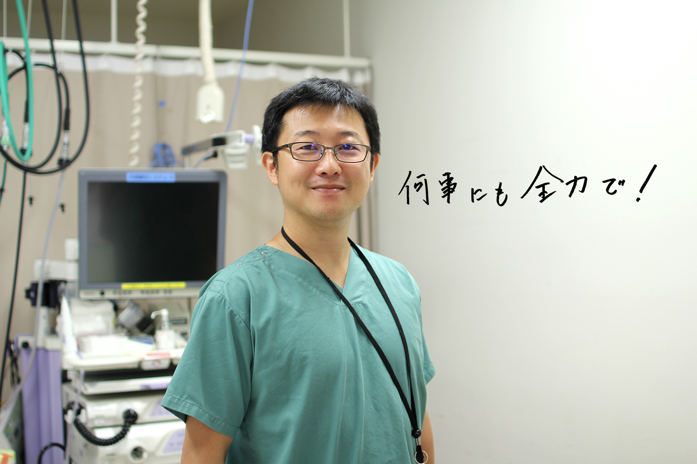

2015 消化器内科医
Gastroenterologist もどる
もどる


■小倉記念病院でやりがいを感じることは
非常に症例数が多く、忙しく充実した毎日を送っています。
また心不全、脳梗塞、腎不全等といったリスクの高い患者さんの割合が多いのが当院の特徴です。抗血栓薬を多剤飲んでいる状況での消化管出血の止血術や、 内視鏡治療を日々おこなっています。大変な症例も多々ありますが、チーム一丸となって乗り越えたときの充実感は何物にも代えがたいものがあります。
■これからの目標
医療は日々進歩しています。最先端の情報や技術を提供していけるように日々精進していきたい。全国に向け情報を発信していくことも必要と考えています。モチベーションを上げつつ、じっくりと患者さんと向き合っていくためには一人でも多くの一緒に頑張ってくれる仲間たちの存在が必要です。楽しく学び、働ける環境を作るべく日夜頑張っています。ぜひ一緒に充実感の味わえる仕事をしましょう。